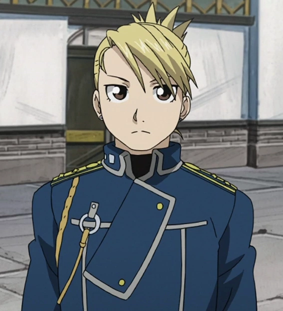
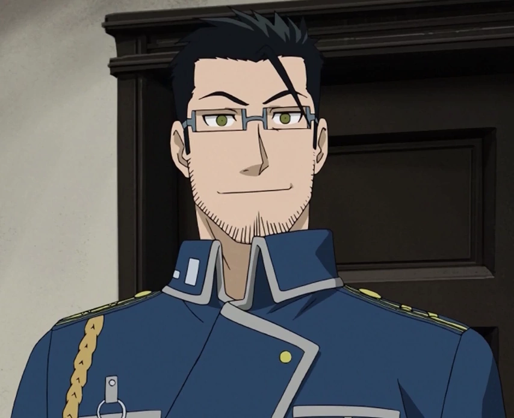
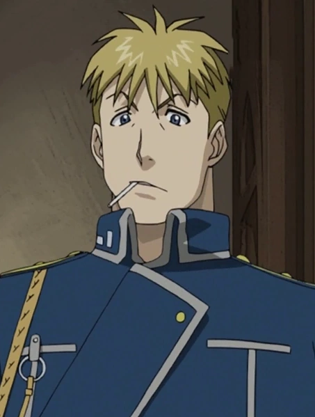
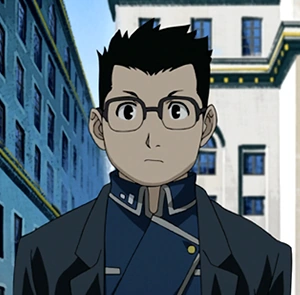

Riza Hawkeye
First Lieutenant
Roy's trusted adjutant and bodyguard, and an expert sharpshooter. #Royai 4ever

Roy Mustang is a charismatic and ambitious officer in the Amestrian military. Using ignition-cloth gloves, he snaps his fingers to create flame and control fire. Scarred by the Ishvalan War, he is determined to rise to Fuhrer and change the country from the top. #Royai 4ever

First Lieutenant
Roy's trusted adjutant and bodyguard, and an expert sharpshooter. #Royai 4ever

Lieutenant Colonel
Roy's closest friend and a devoted family man in Military Investigations.

Second Lieutenant
A loyal, chain-smoking marksman on Roy's team.

Sergeant Major
The team's communications and radio specialist.